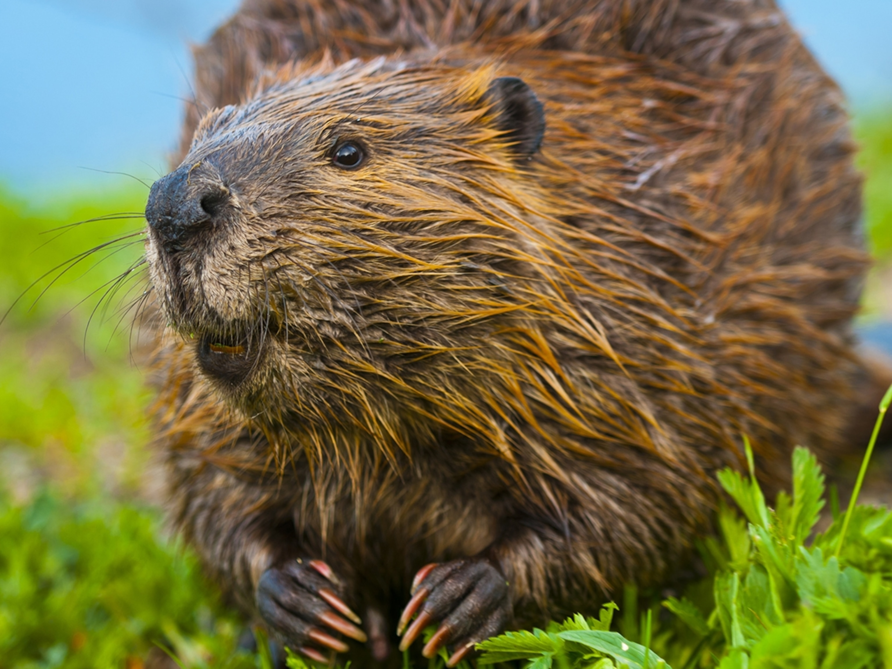

Bainbridge
Bainbridge Beaver
Red
Description of Mascot
Bainbridge is a major city in Maryland with a long history as an important seaport. Beavers are the second-largest living rodents after the capybaras.
Three fun facts about the mascot:
- Bainbridge is a town in Chenango County, New York, United States.
- Beavers are one of the few animals that modify their habitat.
- Beaver teeth are orange.

index